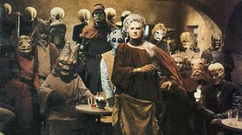

Genetic Engineering
- Genetics Introduction
- Genetic Basics
- Engineering Methods
- Human Cloning
- Eugenics
- Designer Babies
- Mapping The Genome
- Genetics and Religion
- Disease Elimination
- Longevity
- Capacity
- Adaptability
- Fashion
- Physical Attraction
- Stem Cells Revealed
- Stem Cells Controversy
- Human Rights
- The Genetic Brain
- Human Speciation
Genetic Engineering
Human Speciation
Speciation is the process by which a new species is formed from a single initial species. There are a number of theories that might explain the phenomenon. For the astute visitor to our site, the rapid changes soon to be made possible in the human genome through the application of genetic engineering, combined with the geographical separation afforded by space colonization makes for an easy extrapolation of the process to humans.

George Lucas unwittingly had it right at the cantina in Star Wars. What he missed was the fact that all of the species gathered there at the watering hole were all from a common lineage; humans on earth having spread millennia ago, separated by distance, and subject to both direct germ-line manipulation and the environmental forces of the local planetary (or system) conditions.
Visit our main
Future Page for a look at some theoretical future human species.
Below we look at a few of the theories of how speciation occurs.
Speciation Theories
In order for speciation to occur, the following events must happen:
1. There is a single species, made up of a set of interbreeding organisms.
2. A genetic variant must spread through part of the species and the bearers of this variant must mate only with other bearers of the same variant.
3. The species will have now split into two: from one initial population, two separate interbreeding populations will have evolved. Along the way, further phenetic, behavioral and ecological differences may also evolve.
Speciation comes about when there is recombination and isolation between different groups of genes, so that no longer can genes in one group be recombined with genes in another group.
Once this occurs there is selection within each group of genes to interact well with the members of their own gene pool but there is no selection for them to be particularly functional with members of the alternate gene pool.
The crucial event, for the origin of a new species, is reproductive isolation.
Biologists need to understand how a barrier to interbreeding can evolve between the new species and its ancestors. There are three main theories as to how this can happen:
Allopatric speciation in which the new species evolves in geographic isolation from its ancestor.
Parapatric speciation: the new species evolves in a geographically contiguous pair of populations.
Sympatric speciation: the new species evolves within the geographic range of its ancestor.
Allopatric speciation
Allopatric speciation occurs when a new species evolves in geographic isolation from its ancestor. It can happen like this:
One species could split into two if a physical barrier, such as a new river, divided its geographic range. If the barrier is large enough, gene flow between them would cease and the two separate populations would evolve independently. Over time, different alleles would be fixed in them, either because of the hazards of mutation and drift, or because selection favored different characters in the two.
If the two populations are separated long enough for significant divergence to have taken place, then if the barrier is removed and the populations reunited, they might remain distinct from each other. A prezygotic or postzygotic isolation mechanism would prevent them from interbreeding. There would now be two species where there was formerly one.
A single randomly mating species is widely distributed through a geographical region.
Quite suddenly, a natural barrier forms, dividing the species into two separate groups.
Over the succeeding generations, either through selection or random events, the two populations come to differ.
When the barrier is removed, the populations are now so different that there is no reproduction between them: they have become two distinct species.
Peripheral isolation: a form of allopatric speciation.
There is a form of allopatric speciation called peripheral isolation or peripatric speciation.
In peripatric speciation a small population, at the extreme edge of the species' range, is separated off. The same sequence of divergence and possible meeting of the two populations could then take place as in speciation by subdivision.
It has been argued that peripatric speciation has been much commoner than standard allopatric speciation. There are two reasons for this:
It may be physically more probable that a small population would be isolated at the edge of a species range than that a barrier would divide the whole of a species range.
It is thought to be common for isolated populations at the edge of a species range to be distinct in form, whereas the individuals in the main part of the species range show less variation. For example, the kingfishers on the peripheral islands have diverged more than would be predicted from the degree of variation on New Guinea.
There are two possible explanations for this divergence:
1. Local adaptation: the conditions on the island may be such that natural selection favors a distinct phenotype there.
2. Isolation: gene flow from the rest of the species may be reduced on the island, allowing the population there to diverge.
Whatever its explanation, if peripherally isolated populations are likely to diverge from the form of their ancestors, they may well be a common stage on the way to speciation.
Peripheral speciation may produce interesting features
Peripherally isolated populations are likely to be small, perhaps living in relatively extreme conditions and possibly having a non-representative sample of the ancestral species's genes. Because of this, controversial conjectures have been made about how speciation works via peripherally isolated populations:
The speciating population may evolve rapidly (because the population is small) and by drift as well as selection.
The founder effect: the peripheral population is formed by a small number of founder individuals, who lack some of their ancestor's genes. This is a controversial idea, because it implies that speciation might be non-adaptive.
Speciation might be accompanied by a genetic revolution: an extensive re-organization of the gene pool, which takes place in the extraordinary genetic and environmental conditions of the peripherally isolated population.
Parapatric speciation
In parapatric speciation, the new species evolve from contiguous populations.
Parapatric speciation occurs as follows:
Suppose that a population initially existed in an area to which it was well adapted, and that it then started to expand into a contiguous area in which the environment favored a different form. If the transition between the two environments was sudden, a stepped cline would evolve at the border.
As selection worked on the population in the new area, different genes would accumulate in it and the two populations would diverge to become adapted to their respective environments. If they diverged almost to be different species, the border would be recognized as a hybrid zone. The two populations would have separated while they were geographically contiguous, along an environmental gradient.
In contrast to the allopatric theory of speciation, the two populations on either side of the hybrid zone have diverged without any period of geographic separation.
Sympatric speciation
Sympatric speciation describes the splitting into two of a species without any separation of the ancestral species' geographic range. Apart from hybrid speciation, which will be discussed later, it has been a source of recurrent controversy whether sympatric speciation ever happens.
Sympatric speciation could occurs as follows:
Imagine a bird species in which beak size determines the type of food the bird can eat. If the food is seeds, then there will be some distribution of seed sizes in the environment. Suppose also that there are several genotypes influencing beak size in the bird population. The fitnesses of the genotypes will be negatively frequency-dependent because as there are more birds with a certain size of beak they will compete with each other for food and lower one another's fitness. There will be a stable polymorphism of beak genotypes.
Provided the seed sizes have a flat distribution as in the figure, the different genotypes will not have equal fitness. Birds with extreme beak sizes will experience less competition for food, and have higher fitness. In this circumstance, selection will favor assortative mating (tendency of like to mate with like) for beak size. Birds at the edge of the distribution by mating assortatively would produce more offspring like themselves, and therefore with higher fitness, than if they mated at random. As selection fixes assortative mating, the population will split into two new species: one with long beaks, the other with short.
The general conditions for sympatric speciation are therefore that the genotypes are adapted to different resources and the limited resources generate frequency-dependent selection. Then if the resources are not in the frequencies of the genotypes generated by random mating, sympatric speciation becomes a possibility.
Hybrid speciation
There is one type of sympatric speciation which is uncontroversial and well known to exist: hybrid speciation which regularly occurs in plants.
Interspecies hybrids are usually sterile because the chromosome pairs, which consist of one chromosome from one species and another chromosome from the second species, do not segregate regularly at meiosis.
When a hybrid species evolves, this sterility can be overcome by polyploidy: the chromosome numbers are doubled. Each chromosome pair at meiosis contains two chromosomes from one species, and regular segregation is restored. Polyploidization is encouraged by applying the chemical colchicine in the commercial production of new species. Many popular species of garden flowers such as these tulips (opposite) have been created like this. Hybrid speciation can also occur naturally at a low rate. In this case, a new hybrid species may evolve. Some hybrid species also evolve without polyploidy; the initial sterility of the hybrid is overcome by some other genetic means.
Polyploid hybrids are interfertile among themselves, but reproductively isolated (by the mismatch in chromosome numbers) from the parental species; they are therefore well defined new species.
Two problems likely to arise in the transition from a rare new hybrid genotype to a full hybrid species:
1. Finding a mate.
When a fertile polyploid hybrid first arises, it is one hybrid (or perhaps one of a small number) within two large populations of the parental species. The hybrid can only mate with other hybrids like itself and so natural selection on the hybrid therefore has a kind of positive frequency dependence: when it is rare its fitness is lower because of the difficulty of finding a mate.
This helps explain why hybrid speciation has been much commoner in some groups of plants than others. It is much easier for a new hybrid to cross the difficult transition stage, in which it is rare, if it has alternative reproductive options besides sexual cross-fertilization. It has been shown that hybrid speciation is commoner in groups in which asexual reproduction or self-fertilization are possible.
2. Ecological competition.
Two species with identical ecological needs will usually not be able to coexist; if one of the species can survive on a lower level of resources, it will drive the other extinct. When the hybrid arises, it will be in the same place as the parental species, and it is likely to have ecological needs that overlap with them. It is therefore thought that the hybrid species that have become established are those that happened to be adapted to different ecological niches from the parental species.
Those that were ecologically too similar to the parental species would have been lost. The survival of Iris nelsonii (pictured opposite in its swamp land habitat) may have been helped by the way it lives in habitats in between the other three species.
Reinforcement
Reinforcement is the process by which natural selection increases reproductive isolation.
Reinforcement can occur as follows:
When two populations which have been kept apart, come back into contact, the reproductive isolation between them might be complete or incomplete. If it is complete, speciation has occurred. If it is incomplete, hybrids would be produced. If the hybrids had lower fitness than either parental form, selection would act to increase the reproductive isolation because each form would do better not to mate with the other and form the disadvantageous hybrids. Speciation might then be speeded up by favoring genes which caused individuals to avoid mating with hybrids.
Reinforcement is a necessary requirement for both the parapatric and sympatric theories of speciation. It is the process by which a hybrid zone (an area of contact between different forms of a species) develops into a full species barrier.
Secondary reinforcement
Reinforcement is known as secondary reinforcement if the reproductive isolation has partly evolved allopatrically, and is then reinforced when the two populations come into secondary contact. Reinforcement could occur whenever two forms coexist, and the hybrids between them have lower fitness than crosses within each form.
Reinforcement can be simulated by artificial selection experiments. By continually selecting for assortative mating (the tendency of like to mate with like), it has been possible to obtain significant changes in prezygotic isolation mechanisms. However, the theoretical conditions for speciation to take place by reinforcement are difficult and it is controversial whether the process takes place in nature.
Gene flow
There is also the factor of gene flow. Selection might reinforce any isolation between the populations but, until isolation is complete, gene flow will be acting to equalize their gene frequencies. Once the two populations become genetically the same, there can no longer be selection to decrease breeding between them. Selection for reinforcement is likely to be strongest immediately after the two populations meet. If the necessary genetic variation in mating preferences is present, and selection is strong enough, the two species may completely split; but a gradual slide back into a single species is possible.
Allopatric speciation does not need a theory of reinforcement
A theory of speciation can avoid theoretical difficulties if it does not depend on reinforcement. The allopatric theory has this virtue. In the allopatric theory, it could be that reproductive isolation only ever evolves in allopatry (and when it does not the two populations simply collapse back into one when they meet); alternatively, it could be that partial reproductive isolation sometimes evolves allopatrically and is then reinforced on secondary contact. Either possibility fits in with the general theory of allopatric speciation.
The two alternatives - parapatric and sympatric speciation - require the theory of reinforcement: if reinforcement does not operate, neither do they.
Chromosomal evolution
It has been suggested that chromosomal evolution is exceptionally important in speciation. The theory runs like this:
Consider two forms of a chromosome, differing in an inversion. We can call the standard and inverted forms A and A' . Suppose that A and A' have identical sets of genes and produce the same phenotype, as in figure A. The two kinds of homozygote (AA and A'A' ) will have identical fitness. The heterozygote is likely to be selected against, because recombinants between the two forms may have double sets of some genes, and lack others. We have here a precondition for the evolution of assortative mating. AA types should preferentially mate with otherAA types and avoid crossing with A'A' ; and vice versa. A gene causing its bearer to mate assortatively with respect to chromosomal genotype will be favored. If assortative mating becomes established, speciation will result.
Applying the theory
If the theory is correct, we can predict an association between whether or not the members of a taxonomic group have an inbred population structure, their rate of speciation, and of chromosomal change.
Some species live in small social groups, or otherwise have subdivided populations, and in these the degree of inbreeding will be higher than in a species in which individuals outbreed in a large population. Bush et al. tested whether genera whose members live in small family groups have a higher rate of speciation and chromosomal evolution than panmictic genera.
They collected evidence for 225 vertebrate genera. For each, they counted the number of species in it and its chromosomal diversity. The two are correlated, as would be predicted by almost any theory. They then argued that the taxa with higher speciation rates tended to have subdivided population structures; mammals, especially primates and horses (though not whales), have high rates of speciation and chromosomal evolution; amphibians, reptiles, and fish have lower rates - which perhaps explains the existence of living fossils. Primates (like these chimps pictured opposite) and horses are two taxa that usually live in social groups.
It is therefore possible that taxa with subdivided population structures do have higher speciation rates, and maybe this is due to the way chromosomal evolution can proceed more rapidly in these kinds of species.
Speciation - Summary
The evolution of a new species happens when one population of interbreeding organisms splits into two separately breeding populations.
It has been a matter of controversy whether new species evolve only from sub-populations that are geographically isolated (allopatric) from the ancestral population, or whether they can also evolve from sub-populations that are contiguous with (parapatric), or overlap (sympatric), the ancestral population.
Allopatric speciation may be by subdivision of the species range or by a peripheral isolate - a small population which becomes cut off at the edge of the species range.
Parapatric speciation could happen if a steep cline evolved into a hybrid zone and barriers to interbreeding then evolved.
Sympatric speciation is most likely if selection first establishes a stable polymorphism and then favors assortative mating within each polymorphic type.
Many new plant species have originated by hybridization of two existing species, followed by polyploidy of the hybrids.
Reinforcement is the enhancement of reproductive isolation by natural selection: forms are selected to mate with their own, and not with the other, type. Sympatric speciation requires reinforcement to happen; parapatric speciation usually requires it; allopatric speciation can take place with or without reinforcement.
^ Top ^